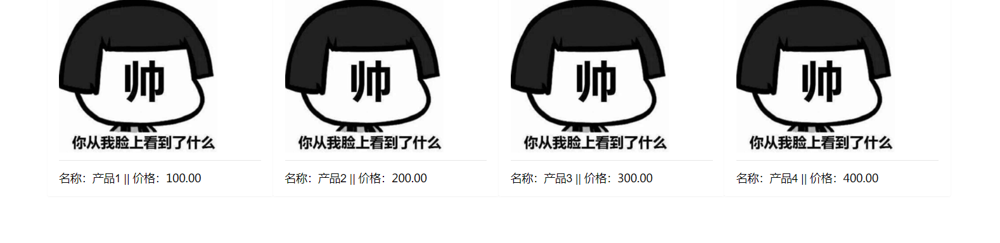
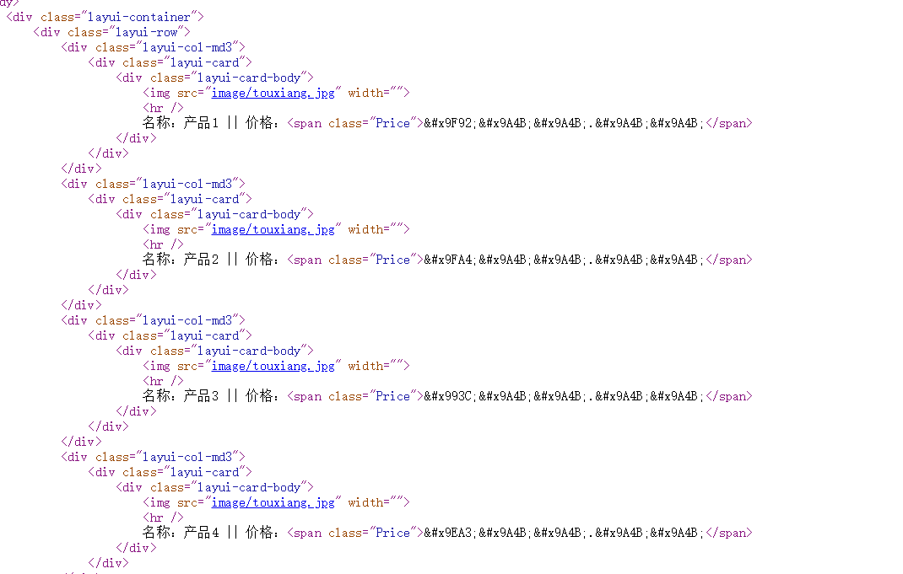
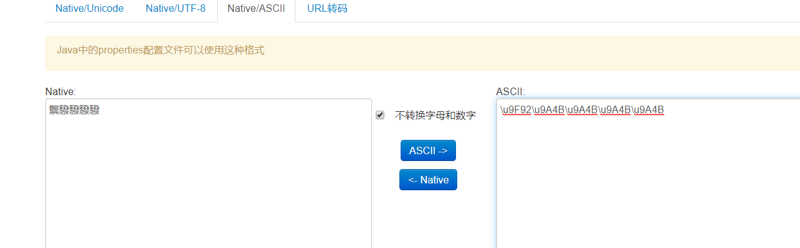
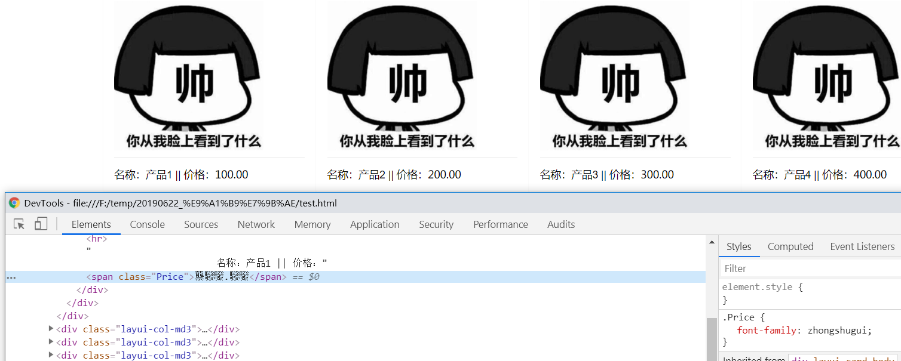
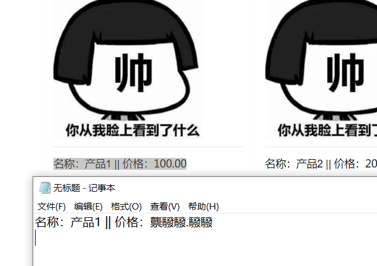
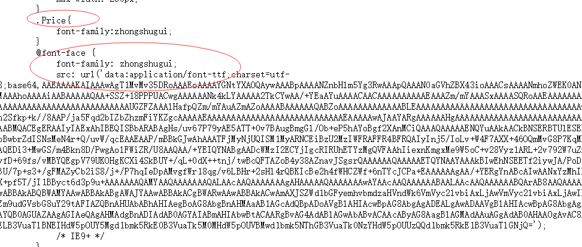
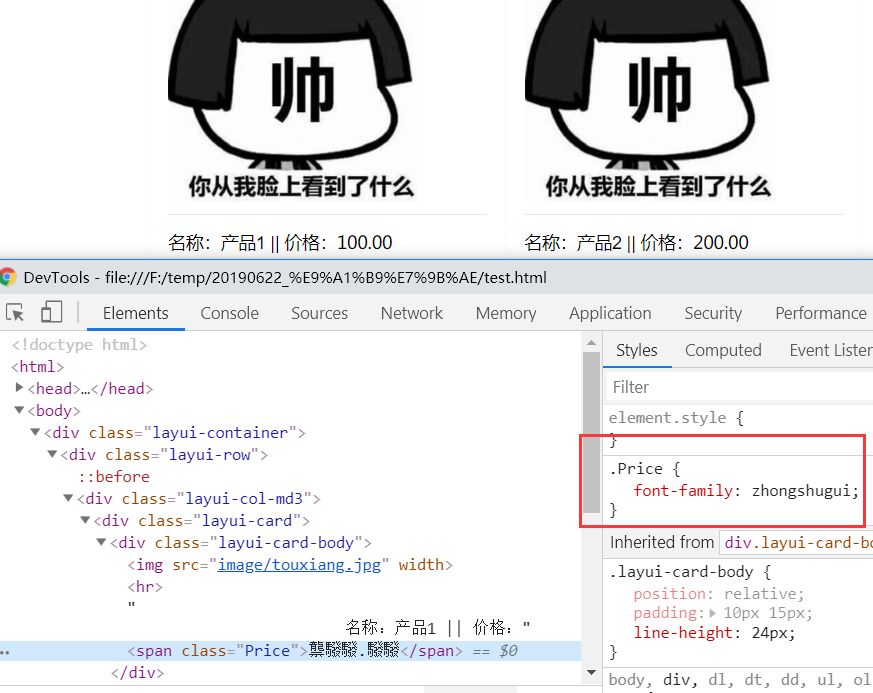
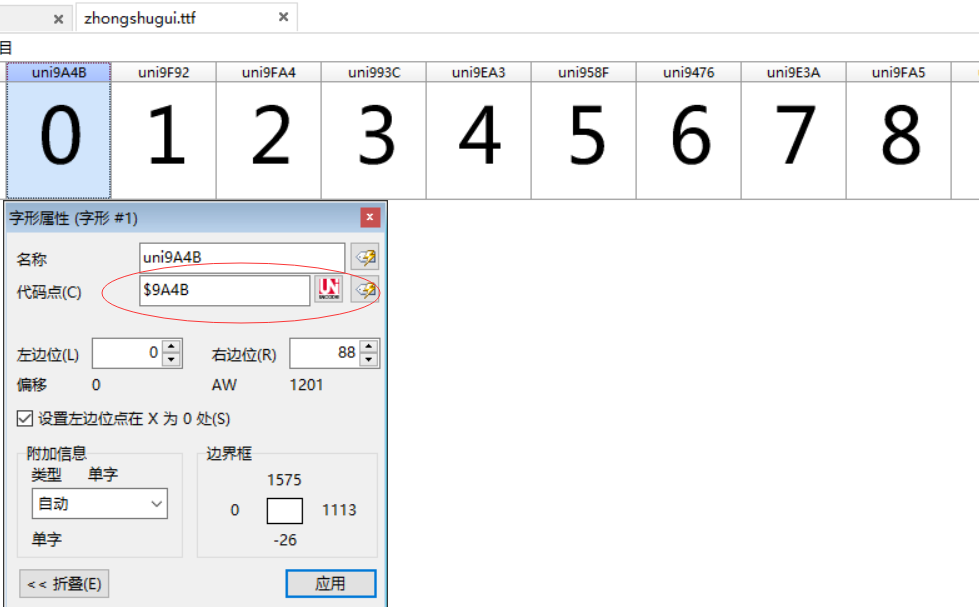

爬虫和反爬虫是一条很长的路，遇到过js加密，flash加密、重点信息生成图片、css图片定位、请求头.....等手段；今天我们来聊一聊字体；
那是一个偶然我遇到了这个网站，把价格信息全加密了；浏览器展示：

查看源码后是这样：

当时突然恍然大悟，以为不就是把价格换成 &#xxxxx: .. 字符实体了嘛 我转下就行了；（注：大家可能对转义字符（实体名称）比较熟悉 比如双引号对应" ，字符实体呢就 &#开头 ; 结尾 中间那些是ASCII码 ；我这个示例中又有点不一样的是 以x开头 表明是16进制的 ASCII码；详解：http://www.w3school.com.cn/html/html_entities.asp 和
http://www.w3school.com.cn/tags/html_ref_ascii.asp） ；于是开始了转码。。。。

这是什么鬼，难道我的判断有误。当我打开浏览器调试界面发现

也是乱码，我在界面上copy金额黏贴到记事本看看

也是乱码说明上面的推断是没有错的，他应该就是在显示上做了什么处理；
在找找发现一段鬼鬼祟祟的代码；给price设置了一个叫zhongshugui的字体，但是好好的字体为啥要用base64 不用 http加载，http加载貌似可以用浏览器缓存的不是更好，base64 的话我每次浏览一个网页不都是要重新加载一下；莫非他不想缓存就是每次加载都不一样，经各种刷新后发现确实每次都生成不同文件；


既然感觉字体有问题 那我们就解析出来看看是啥，

这些0~9正好和界面上的html字符实体编码一一对应；所以这个加密方式就是 html写对应的HTML实体并与字体里的ASCII对应，自定义字体文件 以base64的方式内嵌到html里 ；每个页面随机生成不同的字体（就是字体里的ASCII）；上面那个是为了写帖子自己仿造原网站做的例子；
C#解析字体的类在System.Windows.Media命名空间下Fonts类：
https://docs.microsoft.com/zh-cn/dotnet/api/system.windows.media.fonts?view=netframework-4.8
好困。午休去了；